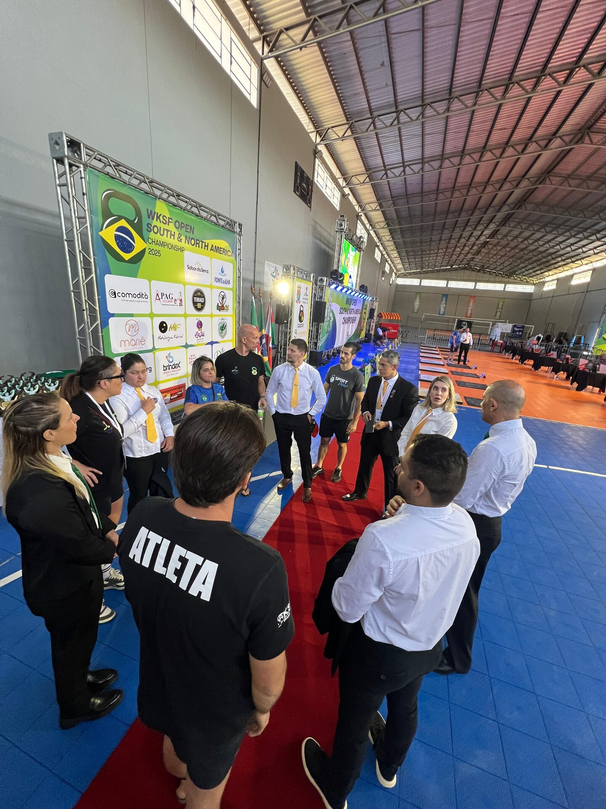

Solicitação de apoio institucional · CONBRAKS & FPEKSPORT
7º Campeonato Brasileiro de Kettlebell Sport • Recife/PE
Fotos

Recepção & organizaçãoVídeos — trechos selecionados
Cronograma — 19 a 22 de novembro de 2026
19 NOV
Montagem da estrutura esportiva e técnica
8h às 15h
20 NOV
1º dia de competições
7h às 18h · feriado nacional, o que reduz o impacto na rotina regular de atividades do clube
21 NOV
2º dia de competições
7h às 18h
22 NOV
3º dia de competições e desmontagem
7h às 17h
A estrutura permanece montada durante todo o evento. Pelas dimensões da arena, estima-se o uso de aproximadamente metade da área útil do ginásio, permitindo — se operacionalmente viável — o uso simultâneo da outra metade pelos sócios e frequentadores do clube.
Vamos conversar
A CONBRAKS e a FPEKSPORT podem apresentar a proposta presencialmente à Prefeitura da Cidade do Recife, esclarecer dúvidas e alinhar todos os aspectos necessários ao apoio institucional para a realização do campeonato no Círculo Militar do Recife.